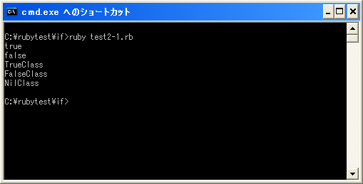

擬似変数 true, false, nil
ここでは疑似変数と呼ばれる「true」「false」「nil」について確認しておきます。擬似変数には特定のオブジェクトが代入されておりユーザーは変更出来ません。
「if」文などでは条件式を記述します。「AとBが等しい」とか「AがBより大きい」などの条件が条件式に記述されます。この式が評価され結果として条件が成立する場合と成立しない場合に分かれます。
この時、条件が成立した場合は条件式は「true」を返します。また条件が成立しなかった場合は「false」を返します。(実際には「true」は変数なので、変数に代入されたオブジェクトを返すのですがあまり気にする必要はありません)。
条件式が成立する場合は true 条件式が成立しない場合は false
では少し変なサンプルですが次の例で考えてみます。
print(1 == 1, "¥n") print(2 == 1, "¥n")
最初の行は、「1」が「1」と等しいかどうかを評価します。この場合は「true」が返されます。次の行では「2」が「1」と等しいかどうかを評価します。この場合は「false」が返されます。(「true」及び「false」は出力するとそれぞれ「true」「false」と表示されます)。
「nil」は「多重代入」でも出てきましたがオブジェクトが存在していないことを表すために使用されます。例えば何もオブジェクトが代入されていない変数には「nil」が代入されているとして扱われます。
真と偽
「if」文で「then」から「end」までの処理が実行されるかどうかは、実際には条件式が真か偽かで判断しています。条件式を評価した結果が真であれば「then」から「end」までの処理が実行されます。
条件式が成立する時に返される「true」は真として扱われます。また成立しなかった時に返される「false」は偽として扱われます。このため、条件式が成立した時は「true」が返さるため真となりその後の処理が実行されることになります。
真となるものと偽になるものは次のように決まっています。
falseとnilは偽 falseとnil以外は全て真
実は「false」と「nil」だけが偽となり、それ以外は全て「真」となります。「true」は「false」でも「nil」でもありませんので結果的に真となっています。
例えば次のような「if」文を考えてみます。
if 1 then
print("真です")
end
条件式の箇所に数値の「1」だけが記述されています。これを評価すると「1」なので「false」でも「nil」でもないため真となります。よって次の文が実行されます。
真となるものは無数に存在していますが、その代表的なものが「true」です。
サンプルプログラム
では簡単なプログラムで確認して見ます。
#! ruby -Ku print(1 == 1, "¥n") print(2 == 1, "¥n") print(true.class, "¥n") print(false.class, "¥n") print(nil.class, "¥n")
上記のプログラムを「test2-1.rb」として保存します。文字コードはUTF-8です。そして下記のように実行して下さい。

今回は関係演算子を使った条件式が返すオブジェクトを表示しています。そして「true」「false」「nil」の各擬似変数が指し示すオブジェクトの元になっているクラスを表示しています。クラスはそれぞれ「TrueClass」「FalseClass」「NilClass」です。
( Written by Tatsuo Ikura )

著者 / TATSUO IKURA
初心者～中級者の方を対象としたプログラミング方法や開発環境の構築の解説を行うサイトの運営を行っています。